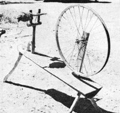
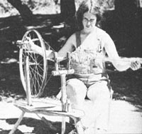

One day Barbara-that's my best friend-and I got this crazy idea: Why not try to make a spinning wheel?
Up until then, Barbara had been spinning our "homegrown" wool (which comes from a little black sheep and a white woolly that we keep here on our ten acres) on a drop spindle. In case you didn't know, a drop spindle is nothing more than a tapered dowel-weighted at the bottom-which you hold vertically and let rotate while pulling wool from the top. It's a slow-but-simple way to spin wool.
Now, it takes a long time to make even a two- or threeounce skein by the drop spindle method. Not that it isn't fun . . . Barbara loves it. (The way I see it, you've got to love spinning to do it in the first place!) But an honest-to-goodness spinning wheel . . . now that would certainly make the whole process a lot easier, and a lot quicker.
We thought awhile, and-after seeing diagrams and pictures of homemade wheels in Foxfire 2 -decided we couldn't wait any longer. We started to track down materials.
"Look!" we exclaimed when we spotted some half-inch and one-inch dowels-perfect to use as the spindle and holder-in the garage. "Hey!" we blurted when we happened across a rough piece of split oak, about four feet long, to use for the platform. I won't even mention what we said when we discovered some pieces of green oak suitable for legs in our firewood pile.
Our biggest piece of luck-considering we're both just unskilled novices when it comes to things mechanical-was finding a ready-made wheel. It came off a lonely old abandoned bicycle in the junkyard. At 24 inches in diameter, it wasn't quite as large as the wheels in Foxfire 2, but it looked as if it would do the trick . . . and it did!
We made one simple modification to the old bike wheel: namely, what we did was [1] strip the tire and inner tube from our much appreciated find, [2] cut a long strip from the tube, and [3] glue this strip of rubber back onto the rim. We figured this'd-make a nice smooth runway to guide the loop of twine that runs between spindle and wheel and keeps everything in motion.
From that point, the actual construction of our spinning wheel was a cinch. All we did was mount the components in their proper positions (see photos), copying what we'd seen in pictures of other folks' wheels, and violà! We had a device that really, honestly worked (much to my amazement). This was the first time I'd ever put anything with moving parts together.
Someday, I suppose I'll try to attach a foot pedal to our masterpiece . . . but for now, we're just happy to have something that works, and which is quicker and easier to use than a drop spindle.
You might be able to buy a spinning wheel, new, for around $50. The one Barbara and I put together cost $2.50-mostly for the epoxy and Weldwood that holds it together-and it couldn't do a better job at any price!
|
 Our homespun spinning wheel,complete with skein of wool. |
 Barbara uses one hand to spin, theother to turn the wheel. |
|